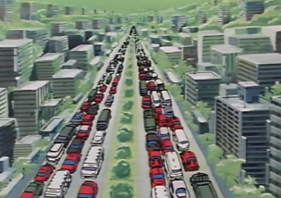
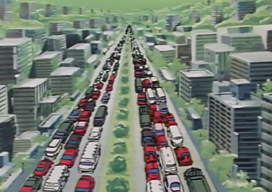

Mahal & Kajuraho Mahal & Kajuraho
Side 3 Bunch 38 Sealed Colony Cluster A peaceful colony bunch on the Earthside edge of Side 3, Mahal and Kajuraho are reasonably populated and peaceful colonies, that want little of war and less of revolution. However, they are patriots, and believe in spacenoid independance, and are thus more or less appreciative of Zeon rule. Mahal and Kajuraho   
|